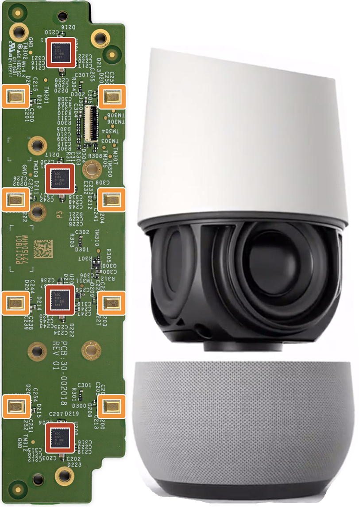

☰
Hardware.
Il existe plusieurs appareils capables de supporter un assisstant numérique.
- Les enceintes connectées
- Les smartphones
- Les ordinateurs sous iOS/Windows
Carrés orange. Microphone.
Google Home. Haut-parleur.
Le nécessaire.
N'importe quel appareil équipé d'un haut parleur et d'un microphone possède les prérequis pour être un assistant numérique et vocal.
Une caméra.
Sur certains appareils, une caméra est également rajoutée. Si elle ne permet pas aujourd'hui une interaction directe avec son assisstant numérique, de nombreuses fonctions avec caméra seront utilisées dans le futur. La caméra permet cependant d'être activée lors de vidéoconférence.